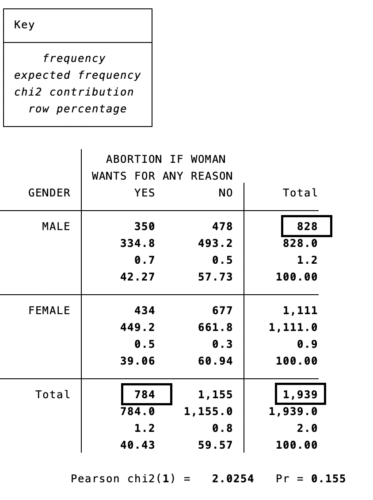
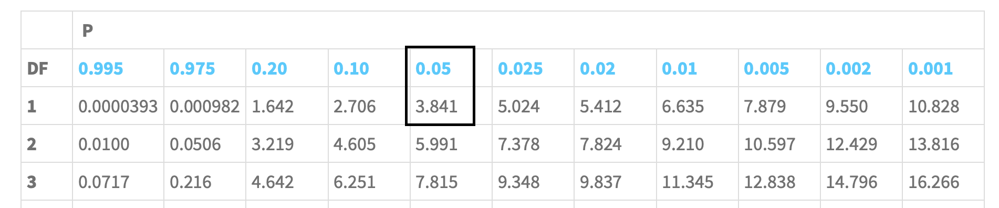
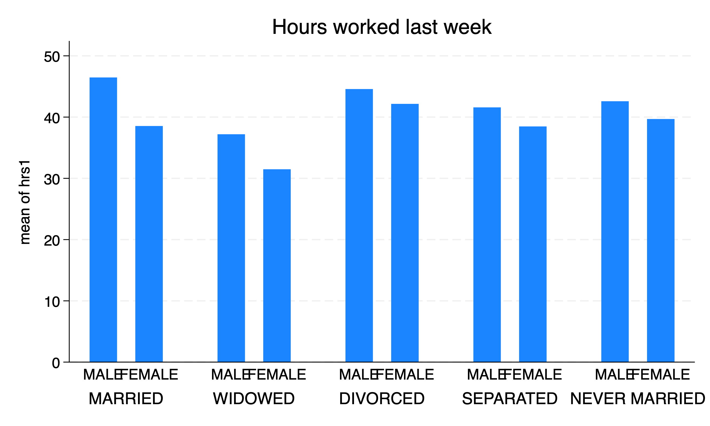
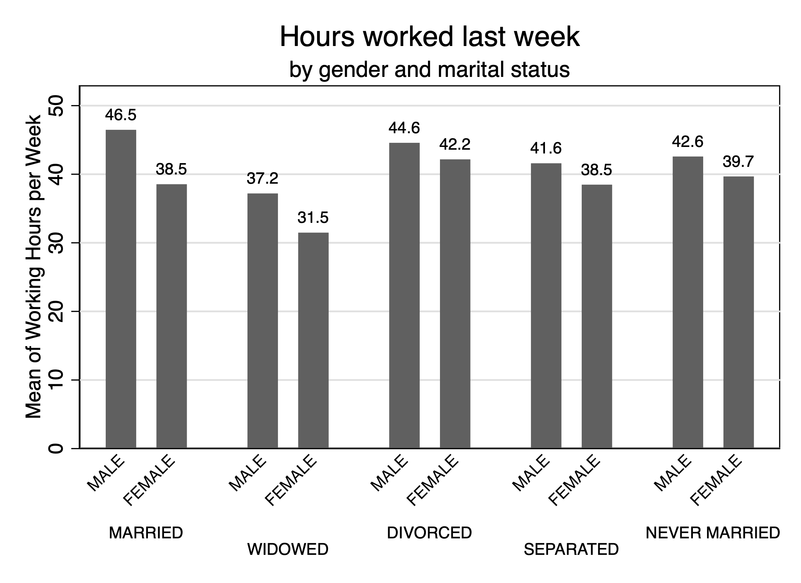

Chapter 1 Descriptive Statistics for Two Variables
At the end of last week, we began examine the relationship between variables. We split hours spent on the internet by sex. We were examining how hours varied between two groups, even though we were focusing on the descriptive statistics for one variable,
Providing descriptive statistics is an essential part of any study. Before you can look at relationships, you need to describe the data: central tendency, variability, and distribution. However, we want to see how descriptive statistics may vary between two variables.
Before more rigorous studies are conducted, researchers conduct descriptive analyses to see if there are associations between two variables. We will start to dive into the statistical methods to look for associations or relationshps between two variables.
Many research questions stem from the association between two variables
- Do women who are drug dependent us different drugs from those used by drug-dependent men?
- Are women more likely to be progressive than men?
- Is there a relationship between religiosity and support for increased spending on public health?
- Is there an association between a training program and long-term wages?
- Is a school intervention lead to higher rates of graduation?
We will learn how to describe relationship between categorical variables from this chapter. What are our tests? What are the potential problems with the test? What are possible misinterpretations?
Acock (2023) tells us that the best statistics are the simplest statistics to use. Honestly, I agree. As we go through the empirical sequence, you will learn more sophisticated but the begin to tradeoff simplicity for rigor. This comes a cost of fewer people understanding your methods.
One of the simplest methods is the two-way tabulation or cross-tabulation. We can examine any potential relationship between two categorical with a \(\chi^2\) test within a two-way tabulation or cross-tabulation.
1.1 Crosstabulation or two-way tabulations
A two-way tabulation or cross-tabulation is a table of rows representing on categorical variable and columns representing another categorical variable. These tables are also sometimes called contigency tables, since response maybe contingent on another variable. For example, support for a particular policy may be contigent on someone’s demographics, such as sex.
Acock (2023) starts off with looking at cross-tabulations between abortion opinions and sex from the 2006 General Social Survey. We have two categorical variables, sex and abany. We will use sex as the row and abortion opinion as the columns. For the tabulate or tab
We will use sex as the explanatory variable and abany as the outcome or dependent variable. We want to explain someone’s opinion on abortion by sex. Please note that explanatory variable may be called independent variables, explanatory variables, or predictor variables.
Note: Acock (2023) brings up a good point about independent and dependent variables. Can dependent variable influence the independent variable? Pay attention to this, because you will delve more into this during Econ 645. This is also way it is essential to start with a research question and then use economic theory before using statistical methods. There could be a third variable that influences both the dependent and independent variable, which makes it look like there is a relationship when there isn’t any. E.g.: There is an association between shark attacks and ice cream. However, once we understand the summer time is associated with both shark attacks and ice cream consumption, the spurious relationship dissolves.
/Users/Sam/Desktop/Econ 643/Data/agis6r
(General Social Surveys, 1972-2006 [Cumulative File], Dataset 0001)
| ABORTION IF WOMAN
| WANTS FOR ANY REASON
GENDER | YES NO | Total
-----------+----------------------+----------
MALE | 350 478 | 828
FEMALE | 434 677 | 1,111
-----------+----------------------+----------
Total | 784 1,155 | 1,939 350 out of 828 males reported it is okay to have an abortion for any reason, while 434 out of 1,111 women said the same.
After looking over this result, it is hard to tell if there are differences in opinion between men and women. We can look at the within-row frequencies, but it is hard to compare. Let’s look at conditional probability. What is \(P(Y|M)\) or what is the probability of saying yes given the individual is a male? What is \(P(N|W)\) or what is the probability of saying no when the individual is a male?
| Key |
|----------------|
| frequency |
| row percentage |
+----------------+
| ABORTION IF WOMAN
| WANTS FOR ANY REASON
GENDER | YES NO | Total
-----------+----------------------+----------
MALE | 350 478 | 828
| 42.27 57.73 | 100.00
-----------+----------------------+----------
FEMALE | 434 677 | 1,111
| 39.06 60.94 | 100.00
-----------+----------------------+----------
Total | 784 1,155 | 1,939
| 40.43 59.57 | 100.00 Interestingly, a higher percentage of males say it is okay to have an abortion for any reason at 42.3% compared to women at 39.1%. It is a small difference, so it makes us wonder if the result is statistically significant. In order to find out, we will use a \(\chi^2\) test.
1.2 \(\chi^2\) test
How can we say there is a relationship between sex and opinion on abortion? Is this by chance? Is it an actual relationship? Is the difference statistically significant? Maybe our \(N\) is large enough to find any difference is statistically significant.
We will set up a null hypothesis that there is no difference between men and women for abortion opinions.
\(H_0:\) There is no difference between men and women.
\(H_A:\) There is a difference between men and women.
We will use a \(\chi^2\) test to test the likelihood that the result occurred by chance. The \(\chi^2\) test compares the frequency in each cell with what you would expect if there were no relationship. The expected frequency depends upon how many people are in the rows and columns.
We will add three additional options to our tabulate command to test the relationship between sex and abany. We will add row to look for conditional probability. We will add expected to add the expected frequency if there were no relationship. Also, we will add chi2 to conduct a \(\chi^2\) test. We can add cchi2 to look at the contributions toward \(\chi^2\).
| Key |
|--------------------|
| frequency |
| expected frequency |
| chi2 contribution |
| row percentage |
+--------------------+
| ABORTION IF WOMAN
| WANTS FOR ANY REASON
GENDER | YES NO | Total
-----------+----------------------+----------
MALE | 350 478 | 828
| 334.8 493.2 | 828.0
| 0.7 0.5 | 1.2
| 42.27 57.73 | 100.00
-----------+----------------------+----------
FEMALE | 434 677 | 1,111
| 449.2 661.8 | 1,111.0
| 0.5 0.3 | 0.9
| 39.06 60.94 | 100.00
-----------+----------------------+----------
Total | 784 1,155 | 1,939
| 784.0 1,155.0 | 1,939.0
| 1.2 0.8 | 2.0
| 40.43 59.57 | 100.00
Pearson chi2(1) = 2.0254 Pr = 0.155Within each cell, we have the frequency, the expected frequency, the \(\chi^2\) contribution, and the conditional probability. The expected frequency is calculated by the marginal frequencies of the row by the maringal frequency of the column divided by the total.
\[ (Total Men * Total Yes)/Total = Expected Frequency for Men and Yes \]
For our upper left cell:
\[ (784*828)/1,939 = 334.8 \]

\[ \]
We calculate the \(\chi_2\) as the following:
\[ \chi_2 = \sum \frac{(O_i-E_i)^2 }{E_i} \]
Each the statistic for each joint frequency \(i\). Such that, for the upper left cell:
\[ \frac{(350-334.8)^2}{334.8}=0.7 \] And we calculate \(\chi^2\) as \(\chi^2 = 0.7+0.5+0.5+0.3=2.0\)
We compare our \(\chi^2\) statistic to a \(\chi^2\) distribution. Before we go to the \(\chi^2\) distribution, we need to get the degrees of freedom. Our degrees of freedom can be calculated as the number of rows minus 1 times the number of columns minus 1:
\[ df=(R-1)\times(C-1) \]
This means that we have one degree of freedom \((2-1)\times(2-1)=1\).
Next, we need to get our critical value to compare. We will set our \(\alpha=0.05\) or a 95% confidence level. Using this, we can go to a \(\chi^2\) distribution to get our critical value to compare to our \(\chi^2\) statistic.

\[ \]
Next, we will compare our \(\chi^2=2.02\) to the critical value of \(3.841\). Since \(2.02 < 3.841\), we fail to reject the null hypothesis that there is no difference in abortion opinions between men and women at the 95% confidence level. We can also look at the \(p\)-value where \(p = 0.155\) where \(p > 0.05\), which means we fail to reject the null hypothesis at the 5% level.
As a side note, we can use Stata to get the \(\chi^2\) table.
After installing the package probtabl, you can get a \(\chi^2\) table by typing chitable 1 for the \(\chi^2\) table with 1 degree of freedom:
Critical Values of Chi-square
df .50 .25 .10 .05 .025 .01 .001
1 0.45 1.32 2.71 3.84 5.02 6.63 10.831.3 Measures of Association
We need to be wary when we find statistical significance with large samples. Even weak relationship may appear to be significant. Our \(\chi^2\) depends upon the relationship between two variables and the sample size.
We can utilize Cramer’s \(V\) to prevent misinterpreting a relationship when one does not exist. We can account for the sample size with Cramer’s \(V\) with the following formula:
\[ V=\sqrt{ \frac{\chi^2}{N \times min(R-1,C-1)}} \] \(V\) will be bound between 0 and 1. A Cramer’s \(V\) between 0 and 0.19 is considered weak, while a value between 0.20 and 0.49 is considered moderate. A value of 0.5 or more is considered strong. Cramer’s V looks for the relationship instead of statistical significance. Please note that \(V\) can be negative due to the order of the columns, so it is really bound between -1 and +1 with 0 showing no relationship.
We need to add the option V in tabulate to calculate Cramer’s \(V\) in Stata.
| Key |
|----------------|
| frequency |
| row percentage |
+----------------+
| ABORTION IF WOMAN
| WANTS FOR ANY REASON
GENDER | YES NO | Total
-----------+----------------------+----------
MALE | 350 478 | 828
| 42.27 57.73 | 100.00
-----------+----------------------+----------
FEMALE | 434 677 | 1,111
| 39.06 60.94 | 100.00
-----------+----------------------+----------
Total | 784 1,155 | 1,939
| 40.43 59.57 | 100.00
Pearson chi2(1) = 2.0254 Pr = 0.155
Cramér's V = 0.0323Our result shows a weak relationship between sex and opinion on abortion.
We can use a data set from the Steering Commitee of the Physicians’ Health Study Research Group. This data set looks at the relationship between men and taking daily aspirin.
| Key |
|----------------|
| frequency |
| row percentage |
+----------------+
| Heart Attack
Condition | No Attack Attack | Total
-----------+----------------------+----------
Placebo | 10,845 189 | 11,034
| 98.29 1.71 | 100.00
-----------+----------------------+----------
Aspirin | 10,933 104 | 11,037
| 99.06 0.94 | 100.00
-----------+----------------------+----------
Total | 21,778 293 | 22,071
| 98.67 1.33 | 100.00
Pearson chi2(1) = 25.0139 Pr = 0.000
Cramér's V = -0.0337We can see that we reject the null hypothesis at the 5% level (even the 0.1% level) from the \(\chi^2\) test. However, when we look at Cramer’s \(V\) we see two things. One the value is negative and the value is near 0. The order of the column matter is the value is negative or positive, but the main take away is the relationship is weak.
1.4 Ordinal Categorical Variables
We can test the relationship between two ordinal variables. We will look at health and happy for how respondents reported their health and happiness, respectively, in the 2006 General Social Survey. We will set health as the explanatory or independent variable and happiness as the outcome or dependent variable.
We need to introduce two additional tests besides a \(\chi^2\) test and Cramer’s \(V\) when variables of interest of ordinal. We will introduce Goodman and Kruskal’s \(\gamma\) and Kendall’s \(\tau_{b}\). Both \(\gamma\) and \(\tau_{b}\) are measures of association for ordinal data. If one person is happier, then we expect them to be healthier, as well. \(\tau_b\) is close to a correlation coefficient. Such that, a \(\tau_b\) less than 0.2 shows a weak relationship, while a \(\tau_b\) between 0.2 and 0.49 shows a moderate relationship. A \(\tau_b\) of 0.5 or above indicate a strong relationship.
In Stata, all we need to do is add the options gamma and taub to our tabulate command.
(General Social Surveys, 1972-2006 [Cumulative File], Dataset 0001)
+-------------------+
| Key |
|-------------------|
| frequency |
| row percentage |
| column percentage |
+-------------------+
CONDITION | GENERAL HAPPINESS
OF HEALTH | VERY HAPP PRETTY HA NOT TOO H | Total
-----------+---------------------------------+----------
EXCELLENT | 271 247 33 | 551
| 49.18 44.83 5.99 | 100.00
| 42.74 22.50 12.50 | 27.61
-----------+---------------------------------+----------
GOOD | 261 567 103 | 931
| 28.03 60.90 11.06 | 100.00
| 41.17 51.64 39.02 | 46.64
-----------+---------------------------------+----------
FAIR | 82 231 92 | 405
| 20.25 57.04 22.72 | 100.00
| 12.93 21.04 34.85 | 20.29
-----------+---------------------------------+----------
POOR | 20 53 36 | 109
| 18.35 48.62 33.03 | 100.00
| 3.15 4.83 13.64 | 5.46
-----------+---------------------------------+----------
Total | 634 1,098 264 | 1,996
| 31.76 55.01 13.23 | 100.00
| 100.00 100.00 100.00 | 100.00
Pearson chi2(6) = 182.1737 Pr = 0.000
Cramér's V = 0.2136
gamma = 0.3917 ASE = 0.030
Kendall's tau-b = 0.2492 ASE = 0.020Our results show that \(\chi^2\) is statistically significant and our Cramer’s \(V\) shows a moderate relationship. However, our \(\tau_b\) is closer to 0.25, which indicates a moderate positive relationship. This is not the end those. We see a value \(ASE\) next the \(\tau_b\). This is the asymptotic standard error for our \(\gamma\) and \(\tau_b\). Our asymptotic error is the estimated standard error and if we divide \(\tau_b\) by the \(ASE\), then we get a \(z\) test statistic. So, \(z=0.249/0.02=12.45\) and \(z > 1.96\), which means it is statistically significant at the 5% level.
Please note that the asymptotic standard errors require large sample sizes to be valid.
Question: Does happiness affect health or does health affect happiness? \[ health \rightarrow happiness \]
\[ health \leftarrow happiness \]
\[ health \leftrightarrow happiness \]
This is why theory is essential for conducting research. It informs us the direction of the relationship.
1.5 Linking categorical and quantitative variables
We can use the table command and graph bar commands to assess the relationships between categorical variables and quantitative variables. We will compare hours worked per week hrs1 and sex to see if they have different means.
We will use the table command to accomplish this task. The table command has three inputs: (row variable) (column variable) (tabular variable). We can add the test statistics of interest, mean and standard deviation, in the options with statistic(mean hrs1) and with statistic(sd hrs1). We will also add the number of non-missing values with statistic(count hrs1).
| Mean Standard deviation Number of nonmissing values
---------+-------------------------------------------------------------
GENDER |
MALE | 44.87671 14.27598 1,387
FEMALE | 39.2034 13.60452 1,352
Total | 42.07631 14.23166 2,739
-----------------------------------------------------------------------Men work about 45 hours per week compared to 39 for women.
What if we want to see the differences between sex and marital. We can add marital to the (column variable).
| MARITAL STATUS
| MARRIED WIDOWED DIVORCED SEPARATED NEVER MARRIED Total
--------------------------------+-----------------------------------------------------------------------
GENDER |
MALE |
Mean | 46.46371 37.1875 44.57692 41.58537 42.57979 44.87437
Standard deviation | 13.1299 14.50618 17.13357 12.66289 14.49134 14.28554
Number of nonmissing values | 744 16 208 41 376 1,385
FEMALE |
Mean | 38.53261 31.47458 42.15649 38.47368 39.67576 39.2034
Standard deviation | 14.47153 13.69666 12.74035 11.7475 12.1052 13.60452
Number of nonmissing values | 644 59 262 57 330 1,352
Total |
Mean | 42.78386 32.69333 43.22766 39.77551 41.22238 42.07307
Standard deviation | 14.32105 13.97292 14.87766 12.17275 13.49768 14.23605
Number of nonmissing values | 1,388 75 470 98 706 2,737
--------------------------------------------------------------------------------------------------------We can see that married men have the highest average hours worked per week at 46 hours, while widowed women have the lowest at 31.
We can use the graph bar to summarize a quantitative variable across multiple nominal quantitative variables. We use the command graph bar (mean) hrs1 to display the mean of hours, and we need to add the options over(sex) and over(marital) to display mean hours.

\[ \]
This does the job, but it does not look very good. We can add some options to improve the format. First, we should add a subtitle to indicate that the means are by sex and marital status with the option subtitle(). Next our categorical labels are too big and overlapping. We will edit the option with options within options. For sex, we will edit over(sex) by angling the label and making it smaller with over(sex, label(angle(45) labsize(small))). For marital status, we will alternative the labels so they don’t overlap and make them smaller with over(marital,label(alternate labsize(small))). Next, we should add a axis title for the y-axis with ytitle().
graph bar (mean) hrs1, over(sex,label(angle(45) labsize(small))) ///
over(marital,label(alternate labsize(small))) blabel(bar, format(%9.1f)) ///
title(Hours worked last week) subtitle(by gender and marital status) ///
scheme(s1mono) ytitle("Mean of Working Hours per Week")
\[ \]
This is looking better. I will note that, in my personal opinion, formatting Stata graphics can be a challenge and can have a steep learning curve. My recommendation is finding chart formats that work and work of their code. You will eventually pick up how to format. Stata’s help pdf are a great resource, but can be overwhelming for new users at first.
Question: What is missing from this graph given that is a sample from the population?
1.6 Power Analysis using \(\chi^2\) test
We will hop ahead a bit and discuss power analysis. Power is the probability of correctly rejecting a \(H_0\) when it is false (Anderson, et al, 2016). Power is related to our sample size. What is the sample size we need to find statistically significant results?
Acock (2023) takes a randomized subset of 10% of the 2006 General Social Survey and runs a two-way or cross-tabulation on sex and health. We will add the option lrchi2, which is a likelihood-ratio \(\chi^2\) statistic. We will need this instead of the Pearson \(\chi^2\) statistic.
(General Social Surveys, 1972-2006 [Cumulative File], Dataset 0001)
+----------------+
| Key |
|----------------|
| frequency |
| row percentage |
+----------------+
| CONDITION OF HEALTH
Gender | EXCELLENT GOOD FAIR POOR | Total
-----------+--------------------------------------------+----------
MALE | 48 82 32 4 | 166
| 28.92 49.40 19.28 2.41 | 100.00
-----------+--------------------------------------------+----------
FEMALE | 44 98 43 14 | 199
| 22.11 49.25 21.61 7.04 | 100.00
-----------+--------------------------------------------+----------
Total | 92 180 75 18 | 365
| 25.21 49.32 20.55 4.93 | 100.00
Likelihood-ratio chi2(3) = 6.1135 Pr = 0.106It seems that Men are more likely than women to report being in excellent health, while women are more likely to report being in poor health than men. However, we fail to reject the null hypothesis that they health differs between men and women, since \(Pr=0.106\) which is greater than 0.05.
Note, that we are only using 10% of the survey. How many observations do we need to find a statistically significant difference (if one exists) between men and women on reporting health?
There is a user-generated command called chi2power from Philip Ender that can conduct a power analysis. We need to search for the chi2power package in Stata by running the following and installing the package.
In order to run the chi2power command, we need to use the lrchi2 option with the tabulate command. We conduct the power analysis by typing the command chi2power. Next, we need to provide the options. First, we will use the option startf(1), which means start from 1 times the sample size or \(n=365\). Next, we will use the option endf(10), which means end at 10 or end at \(n=365 \times 10\). Finally, we use the option incr(1), which means increment from 1 to 10 by 1.
alpha = .05
sample size factor = 1.00 power = 0.5265 for n = 365
sample size factor = 2.00 power = 0.8476 for n = 730
sample size factor = 3.00 power = 0.9623 for n = 1095
sample size factor = 4.00 power = 0.9922 for n = 1460
sample size factor = 5.00 power = 0.9986 for n = 1825
sample size factor = 6.00 power = 0.9998 for n = 2190
sample size factor = 7.00 power = 1.0000 for n = 2555
sample size factor = 8.00 power = 1.0000 for n = 2920
sample size factor = 9.00 power = 1.0000 for n = 3285
sample size factor = 10.00 power = 1.0000 for n = 3650We need power of at least \(0.80\) to find statistically significant results, but researchers prefer a power \(0.90\). Our results show that \(n=365\) then our power is only \(power=0.53\). This means we would obtain a statistically significant \(\chi^2\) about \(52.7\%\) of the time. However, if we double the sample size to \(n=730\) then our power becomes \(power=0.85\). This means we will get a statistically significant \(\chi^2\) \(85\%\) of the time.
Power analysis is important so get an idea of the required sample size for you data collection. If our sample size included 500 observations, our power would be below the threshold of \(80\%\). However, if we collect 2,000 observations, then we an unnecessary and expensive survey. This is an inefficient use of the funds for the analysis.